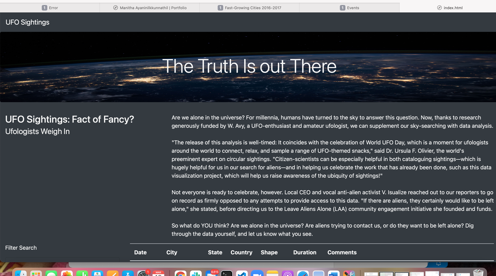
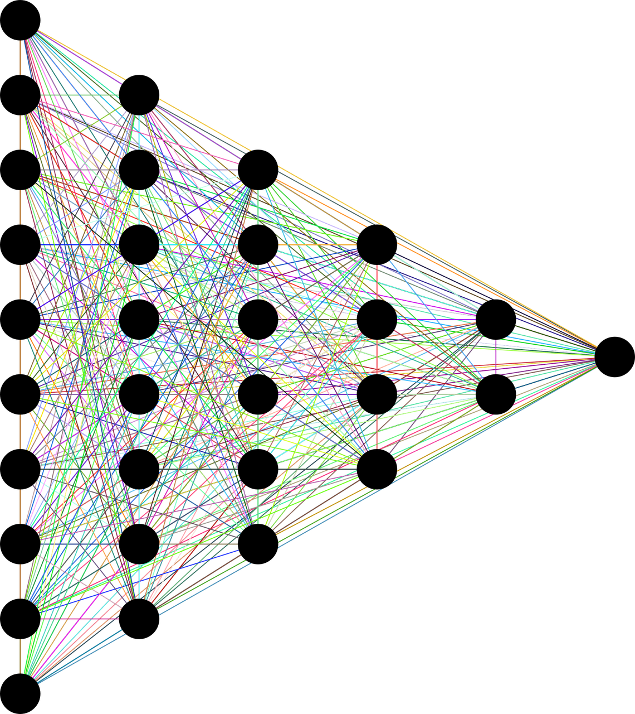

Portfolio


Education
University of Arizona | Dec 2021 -Jun 2022
Data Analytics Boot Camp Certificate
Data Analytics is a high-growth career track, and from University of Arizona Coding Boot Camp I learned the specialized skills for various facets of data science, data visualization . This intensive 24-week online program is focused on the technical skills needed to solve real-world data problems. I gained proficiency in numerous in-demand technologies, Intermediate Excel, Python programming, JavaScript charting, HTML5/CSS, API interactions, PostgreSQL/pgAdmin, Tableau, fundamental Statistics, machine learning, R, Git/GitHub, and more.
IBM Certification in Data Science | Feb 2021
IBM Professional Certificate in Data Science
Learned data science through hands-on practice in the IBM Cloud using real data science tools and real-world data sets. The program consists of 9 online courses with the latest job-ready tools and skills, including open source tools and libraries, Python, databases, SQL, data visualization, data analysis, statistical analysis, predictive modeling, and machine learning algorithms.
Cochin University of Science And Technology | Aug 2004 - May 2006
Masters' in Science(Mathematics)
Earned my Master’s in Mathematics from Cochin University of Science And Technology which is a two-year postgraduate program with four semesters. The course provides a deeper knowledge of advanced mathematics including a deep knowledge of pure and applied mathematics subjects, and offers wide options of subject choice including –Linear Algebra 1 & 2, Real Analysis, Measure and Integration,Functional Analysis,Topology,Probability Theory,Complex Analysis,Fluid Mechanics, Mathematical Finance, Number theory and Cryptology, Differential equations, etc
Kickstarter Analysis

Knowledge in Advanced Microsoft formulas and terminology, create interactive charts and graphs with Excel pivot charts, and organize data with filters, and conditional formatting.
View Codestock-analysis

Perform financial analysis and automate report building in Excel using VBA Scripting.
View Code
School_District_Analysis
Use Python and the Pandas library to analyze School District data and showcase trends in school performance. • Role: Sole author • Tools: Python, Jupyter Notebook
View CodePyBer_Analysis

Exploratory analysis and created visualizations of rideshare data for PyBer to help improve access to ride-sharing services and determine affordability for underserved neighborhoods. • Role: Sole author • Tools: Python, Jupyter Notebook
View CodeWorld_Weather_Analysis
Generate a set of 2,000 random latitudes and longitudes, retrieve the nearest city, and perform an API call with the OpenWeatherMap • Role: Sole author • Tools: Python, Jupyter Notebook, JSON,OpenWeatherMap API, Google maps and Places API
View CodePewlett-Hackard-Analysis

Determine the number of retiring employees per title, and identify employees who are eligible to participate in a mentorship program using SQL Queries • Role: Sole author • Tools: PostgreSQL 11- Database, pgAdmin 4- interface,Quick DBD
View CodeMovies-ETL
Created ETL pipeline to extract data then transform and load data to the database. • Role: Sole author • Tools: Python, Jupyter Notebook, PostgreSQL 11- Database, pgAdmin 4
View Codesurfs_up

Query an SQLite Database using SQLAlchemy • Role: Sole author • Tools:Python, Jupyter Notebook, SQLite Database, Flask
View CodeMission-to-Mars-
Automates a web browser to visit different websites to extract data about the Mission to Mars, store it in a NoSQL database, render the data in a web application created with Flask,and then create an HTML page to display findings. • Role: Sole author • Tools: Python, Jupyter Notebook, NoSQL,Flask,HTML, and CSS
View CodeUFOs

Use Javascript,HTML, and CSS to create a custom webpage that showcases UFO sightings around the world. • Role: Sole author • Tools: JavaScript, HTML and CSS
View Code
Leaflet- Mapping_Earthquakes
Use Javascript’s Leaflet library along with mapbox API to create visualization of earthquake data from the U. S. Geological survey. • Role: Sole author • Tools: JavaScript, HTML and CSS
View CodeTableau
Create worksheets, dashboards, and stories from New York citi bike -sharing data. • Role: Sole author • Tools: Tableau
View CodeStatistics and R
Learn how to use R and statistics in order to analyze vehicle data. • Role: Sole author • Tools: R,Statistics
View CodeBig Data
Perform ETL on a dataset from Amazon. • Role: Sole author • Tools: AWS RDS ,AWS S3,Pyspark
View CodeSupervised machine learning

Use Python to build and evaluate several machine learning models to predict credit risk. • Role: Sole author • Tools: Python, Jupyter Notebook
View CodeUnsupervised machine learning
Use unsupervised machine learning techniques to analyze cryptocurrency data. • Role: Sole author • Tools: Python, Jupyter Notebook
View CodeNeural network and Deep learning

Create a deep learning neural network to analyze and classify the success of charitable donations. • Role: Sole author • Tools: Python, Jupyter Notebook
View CodeMachine Learning Real Estate Predictions

A Machine Learning Project implemented from scratch which involves data engineering, exploratory data analysis and machine learning to predict housing prices in Phoenix Central Area. The challenge was to learn a relationship between the important features like square footage, number of beds, number of bathrooms, Year built, Zip-code, crime rate per zip, school ratings per zip and price and use it to predict the price of new set of houses. • Role: Co-author • Tools: Python, Jupyter Notebook, HTML, CSS, Postgres-11
Live Demo View Code